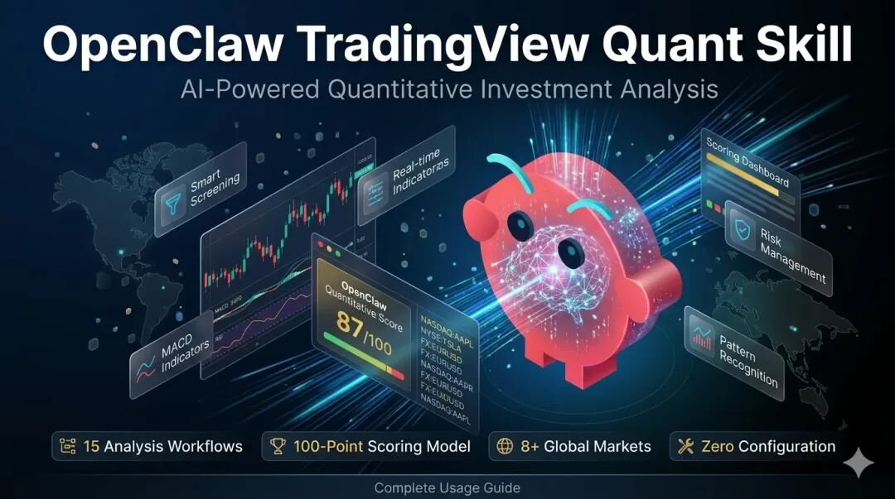
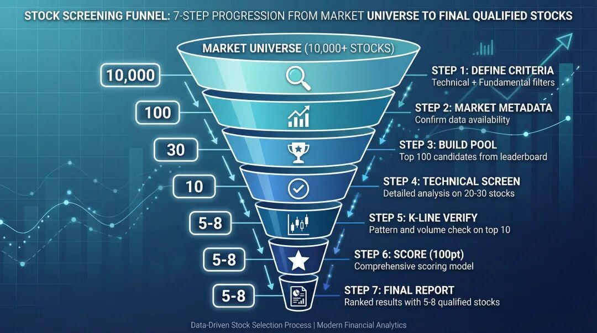
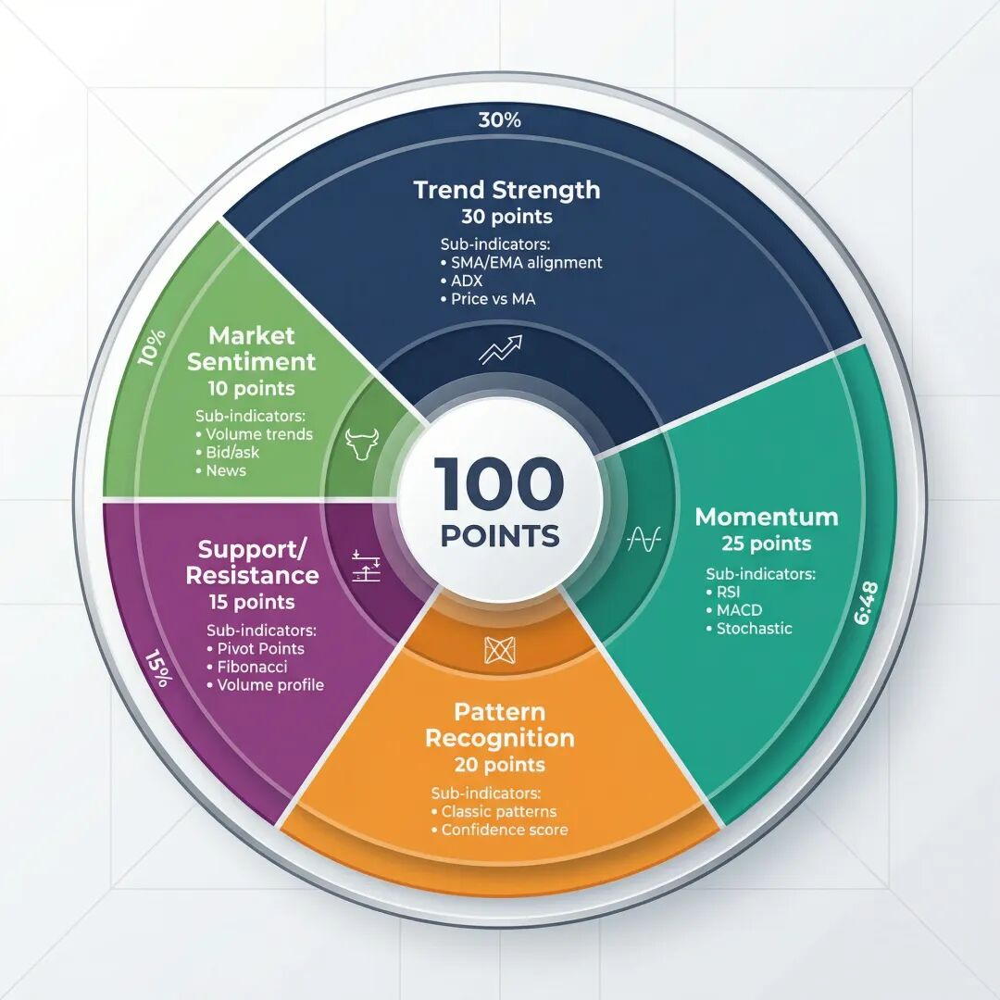
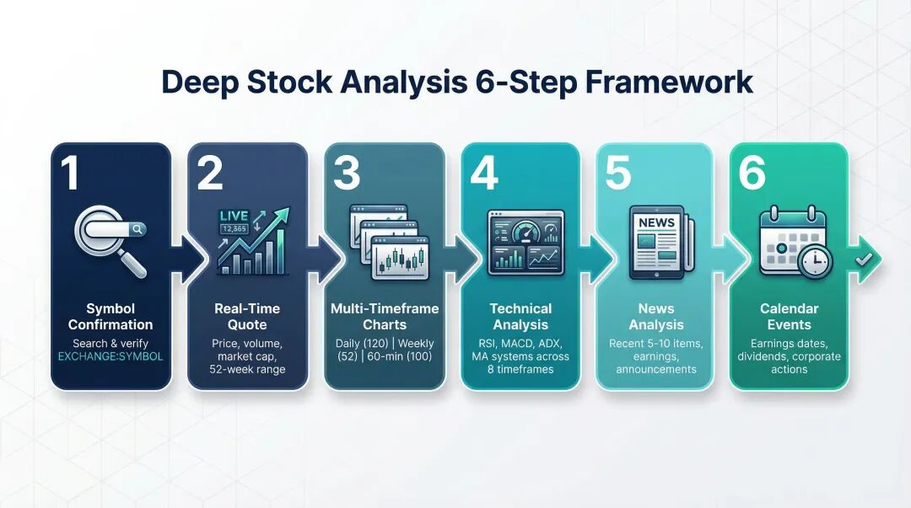
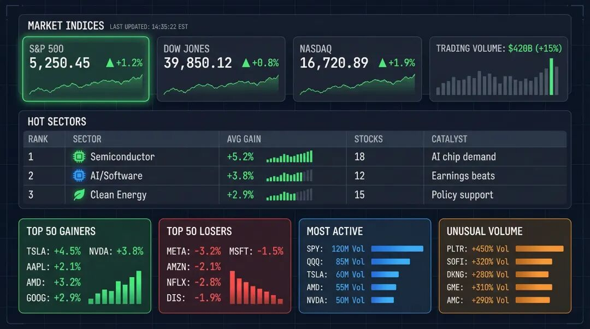
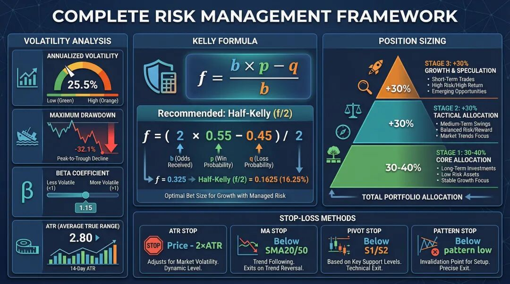
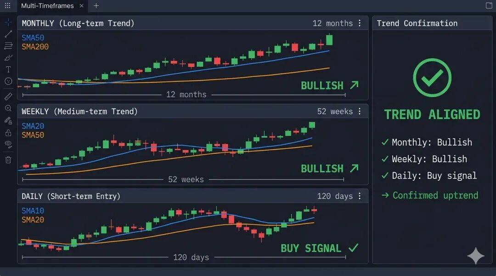

OpenClaw TradingView 量化技能(openclaw-tradingview-quant)是一个 AI 驱动的量化投资分析系统,于 2026 年 3 月发布。它通过 15 个预构建的分析工作流、100 分技术评分模型和机构级风险管理框架,将 AI 助手转变为专业市场分析师。
关键数据:
• 安装时间: <30 秒(单条命令: npx skills add ljsd666/openclaw-tradingview-quant)• 分析工作流: 15 个专业框架,涵盖筛选、分析、风险管理 • 市场覆盖: 8+ 全球市场,160,000+ 交易品种,353+ 加密货币交易所 • 评分模型: 100 分系统,涵盖 5 个维度(趋势 30 分、动量 25 分、形态 20 分、支撑/阻力 15 分、情绪 10 分) • 形态识别: 12+ 经典图表形态,带置信度评分 • 配置要求: 零配置(无需 API 密钥,无需设置,立即可用)
目标用户: 交易者、投资者、量化分析师、金融科技开发者,无需编程即可进行系统化市场分析。
想要像专业量化分析师一样分析股票——使用 AI 筛选机会、解读技术指标、管理风险——而无需编写一行分析代码?
OpenClaw TradingView 量化技能是一个专业的量化投资分析系统,可将你的 AI 助手转变为市场分析专家。基于 TradingView API 数据结构构建,它提供 15 个预构建的分析工作流、100 分技术评分模型和专业风险管理框架,覆盖股票、加密货币、外汇和期货等 8+ 全球市场。
市场数据覆盖(2026 年 3 月):
• 交易品种: 160,000+ 跨所有资产类别 • 股票交易所: 纽交所、纳斯达克、港交所、上交所、深交所、东京证交所、伦敦证交所、泛欧交易所等 60+ 交易所 • 加密货币交易所: 353+ 包括币安、Coinbase、Kraken、OKX、Bybit • 数据提供商: TradingView API 通过 RapidAPI 服务 10,000+ 开发者
根据 RapidAPI 市场数据,TradingView Data API 服务超过 10,000 名开发者,覆盖 160,000+ 金融工具,使这个技能成为个人投资者和量化分析师可用的最全面的 AI 驱动分析工具之一。
本指南适用于: 希望利用 AI 进行系统化市场分析的交易者、投资者和开发者。无需编程经验——只需自然语言查询。
你将学到:
• 如何在 30 秒内安装和配置技能 • 使用多因子评分进行智能股票筛选 • 跨多个时间框架进行深度个股分析 • 进行每日市场回顾和板块轮动跟踪 • 实施专业风险管理和仓位管理
核心要点: 通过本指南,你将能够使用 15 个专业分析工作流来筛选股票、分析技术形态、回顾市场和管理风险——所有这些都通过与 AI 助手的自然语言对话完成。该技能涵盖美股、全球市场、加密货币、外汇和期货。
什么是 OpenClaw TradingView 量化技能?
最后更新: 2026 年 3 月 13 日
OpenClaw TradingView 量化技能(openclaw-tradingview-quant)是一个 AI 技能,基于 TradingView API 数据结构提供专业的量化投资分析框架和方法论。它将你的 AI 助手转变为市场分析专家,能够进行系统化股票筛选、多时间框架技术分析、形态识别和风险调整后的仓位管理。
发布信息:
• 发布日期: 2026 年 3 月 • 当前版本: 1.0 • 包名称: ljsd666/openclaw-tradingview-quant• 安装方法: npm/npx • 许可证: 开源
核心功能一览:
| 智能股票筛选 | smart-screening.md | |
| 深度个股分析 | deep-stock-analysis.md | |
| 技术形态识别 | pattern-recognition.md | |
| 市场回顾 | market-review.md | |
| 风险管理 | risk-assessment.md | |
| 板块轮动 | sector-rotation.md | |
| 事件驱动分析 | event-analysis.md | |
| 多时间框架分析 | multi-timeframe-analysis.md |
主要优势:
• 零配置: 安装后立即使用——无需 API 密钥或设置(安装时间:<30 秒) • 自然语言界面: 用中文或英文提问——无需编程技能 • 专业方法论: 机构量化分析师使用的分析框架(100 分评分模型、凯利公式仓位管理、多时间框架验证) • 多市场覆盖: 8+ 市场,包括美国(纽交所、纳斯达克)、中国(上交所、深交所)、香港(港交所)、日本(东京证交所)、欧洲(伦敦证交所、泛欧交易所)、353+ 加密货币交易所、外汇对、期货 • 全面工作流: 15 个分析框架,涵盖从筛选到风险管理的完整投资生命周期 • 形态识别: 12+ 经典图表形态,带置信度评分(0-100%)和历史成功率
如何安装 OpenClaw 量化技能
步骤 1: 运行安装命令
打开终端并运行:
npx skills add ljsd666/openclaw-tradingview-quant安装通常在 30 秒内完成。无需额外依赖、API 密钥或配置文件。
步骤 2: 验证安装
安装后,你的项目目录将包含:
openclaw-tradingview-quant/
├── SKILL.md # AI 技能描述
├── SECURITY.md # 安全策略
├── references/ # 8 个参考文件 + 9 个 API 示例
│ ├── api-examples/ # 真实 API 响应格式示例
│ ├── api-documentation.md # 完整 TradingView API 文档
│ ├── technical-analysis.md # 100 分评分方法论
│ ├── pattern-library.md # 形态识别算法
│ ├── risk-management.md # 仓位和风险管理
│ └── us-stock-examples.md # 实用案例研究
└── workflows/ # 15 个分析工作流文件
├── smart-screening.md
├── deep-stock-analysis.md
├── market-review.md
└── ... (另外 12 个工作流)步骤 3: 开始分析
只需向你的 AI 助手提出市场分析问题。当你询问股票分析、技术指标、市场筛选、风险管理或交易策略时,技能会自动激活。
专业提示: 该技能适用于任何支持 OpenClaw 技能格式的 AI 助手,包括 Claude、ChatGPT 和其他兼容平台。
智能股票筛选:发现优质机会
智能筛选工作流使用多因子模型从市场中过滤优质标的,将技术分析和基本面分析结合到一个综合评分系统中。
筛选流程如何工作
筛选遵循 7 步漏斗,逐步缩小候选范围:
1. 定义筛选标准 — 市场范围、技术条件、基本面过滤器 2. 获取市场元数据 — 确认市场代码和可用数据标签 3. 构建候选池 — 从排行榜排名中提取前 100 名候选 4. 技术筛选 — 对前 20-30 名候选进行详细技术分析 5. K线验证 — 验证前 10 名的价格形态和成交量 6. 综合评分 — 应用 100 分评分模型 7. 生成报告 — 输出排名结果和交易建议

100 分技术评分模型
每只筛选出的股票都会在 5 个维度上获得综合评分:
| 趋势强度 | ||
| 动量 | ||
| 形态识别 | ||
| 支撑/阻力 | ||
| 市场情绪 |

示例:筛选美国科技股
帮我从美国科技板块筛选强势股票,重点关注:
- 科技板块(软件、半导体、云计算)
- RSI 在 40-70 之间(未超买)
- MACD 在过去 5 天内金叉
- 市值超过 100 亿美元AI 执行完整的筛选工作流:
1. 从美国市场排行榜(纽交所、纳斯达克)提取前 100 名涨幅榜 2. 获取估值和盈利能力数据进行基本面过滤 3. 对顶级候选使用 include_indicators=true运行技术分析4. 使用 60 天日线 K 线数据验证均线排列 5. 输出带有评分、入场价格和止损水平的排名报告
示例输出结构:
# 智能股票筛选结果 — 美国科技板块
## 合格股票(100 个候选中有 8 个通过)
### 1. Advanced Micro Devices (NASDAQ:AMD) ⭐⭐⭐⭐⭐
综合评分: 87/100
- 技术面: RSI=55, MACD=金叉, 趋势=强势看涨
- 基本面: PE=25.3, ROE=18.7%
- 买入建议: $145.20-146.80
- 止损: $142.50
- 目标价: $152.00深度个股分析
当你想要对特定股票进行全面评估时,深度分析工作流将 6 个数据源整合到一份综合报告中。
6 步分析框架
步骤 1: 代码确认 — 通过名称或代码搜索,确认准确的 EXCHANGE:SYMBOL 格式(例如 NASDAQ:AAPL、NYSE:TSLA)。
步骤 2: 实时报价 — 当前价格、涨跌幅、成交量、市值、52 周区间和买卖盘数据。
步骤 3: 多时间框架图表 — 三个并行数据提取:
• 日线(120 根 K 线) — 中期趋势分析 • 周线(52 根 K 线) — 长期方向和主要支撑/阻力 • 60 分钟(100 根 K 线) — 短期入场时机和日内形态
步骤 4: 详细技术分析 — 完整指标套件,包含跨 8 个时间框架(1 分钟到月线)的多时间框架信号摘要,以及 RSI、MACD、ADX 和均线系统的单独读数。
步骤 5: 新闻分析 — 按代码过滤的最近 5-10 条新闻,涵盖财报、公司公告、行业发展和监管变化。
步骤 6: 日历事件 — 即将到来的财报发布、分红日期和可能影响价格的公司行动。

示例:分析美国科技股
帮我分析英伟达(NVDA)——现在是买入的好时机吗?AI 生成一份综合报告,包括:
• 所有时间框架的技术评分 • SMA50 的关键支撑和近期高点的阻力 • 即将到来的财报日期和分析师预期 • 基于你的资金的仓位管理建议 • 明确的风险回报比,包含止损和目标水平
每日市场回顾:跟踪板块和资金流向
市场回顾工作流为每日市场分析提供系统化框架,帮助你识别热门板块和发现投资机会。
市场回顾涵盖什么
完整的市场回顾从 4 个并行来源提取数据:
1. 前 50 名涨幅榜 — 表现最强的股票,包含成交量和涨跌数据 2. 前 50 名跌幅榜 — 最弱的股票,用于识别板块弱势 3. 最活跃(30 只股票) — 最高成交量,用于资金流向信号 4. 异常成交量(30 只股票) — 异常成交量激增,表明机构活动
然后将这些数据与以下内容交叉引用:
• 市场新闻(10-20 条最近项目)用于催化剂识别 • 指数报价(例如标普 500、道琼斯、纳斯达克综合指数)用于广泛市场背景 • 板块分类以识别前 3-5 个热门板块

阅读市场回顾报告
输出遵循结构化格式:
# 美国股市回顾 — 2026-03-11
## 市场概览
- 标普 500: +1.2% | 道琼斯: +0.8% | 纳斯达克: +1.9%
- 涨跌比: 3,200 上涨 / 1,500 下跌
- 交易量: 4,200 亿美元(+15% vs. 前一日)
## 热门板块(按强度排名)
| 排名 | 板块 | 平均涨幅 | 股票数量 | 催化剂 |
|------|----------|----------|----------|----------------|
| 1 | 半导体 | +5.2% | 18 | 芯片需求强劲 |
| 2 | AI/软件 | +3.8% | 12 | 财报超预期 |
| 3 | 清洁能源 | +2.9% | 15 | 政策支持 |
## 投资机会
- 半导体: AI 芯片需求激增,关注回调入场机会
- AI 板块: 财报动能,关注云计算领导者支持的回顾市场
你可以对以下任何市场运行市场回顾:
• 美国: market_code='america'— 纽交所、纳斯达克• 欧洲: market_code='uk'、market_code='germany'— 伦敦证交所、德国证交所• 亚洲: market_code='japan'、market_code='hongkong'— 东京证交所、港交所• 加密货币: asset_type='crypto'— 所有主要交易所
风险管理:仓位管理和止损
专业的风险管理是将盈利交易者与其他人区分开来的关键。该技能提供完整的风险评估框架,包括波动率分析、凯利公式仓位管理和多方法止损计算。
波动率分析
系统从 250 天历史数据计算关键风险指标:
• 年化波动率 — 日收益率标准差 × √252 • 最大回撤 — 期间内最大的峰谷跌幅 • 贝塔系数 — 股票相对于市场的波动率 • 平均真实波幅(ATR) — 平均日价格区间,用于动态止损
凯利公式仓位管理
凯利公式根据你的胜率和风险回报比确定最优仓位规模:
f = (b × p - q) / b
其中: b = 赔率(回报/风险), p = 胜率, q = 1 - p
建议: 使用半凯利(f/2)采取保守方法波动率调整替代方案:
建议仓位 % = 目标日波动率 / 工具日波动率
示例: 目标 2% 日波动率,股票有 4% → 最大仓位 = 50%分批入场策略
该技能建议 3 阶段入场方法:
| 首次入场 | ||
| 加仓 1 | ||
| 加仓 2 |
止损和止盈计算
系统评估 4 种止损方法并推荐最合适的:
1. ATR 止损: 当前价格 − 2 × ATR(动态,适应波动率) 2. 均线止损: 低于 SMA20 或 SMA50 支撑 3. 枢轴点止损: 低于 S1 或 S2 支撑水平 4. 形态止损: 低于识别的图表形态的低点
风险回报要求: 最低 1.5:1 比率,理想情况下 2.0:1 或更高。

示例:10 万美元投资组合的仓位管理
我有 10 万美元资金,想买苹果(AAPL)。
我应该分配多少?AI 计算:
• 股票的年化波动率(例如 28%) • 使用半凯利公式的最优仓位规模 • 入场价格、基于 ATR 的止损水平和两个止盈目标 • 最大潜在损失: 2,000 美元(每笔交易总资金的 2%)
技术形态识别
形态识别工作流识别经典图表形态并提供置信度评分的交易信号。
支持的形态
该技能的形态库涵盖最可靠的图表形态:
反转形态:
• 头肩顶 / 倒头肩底 • 双顶 / 双底 • 三重顶 / 三重底 • 圆弧底
持续形态:
• 牛旗 / 熊旗 • 上升 / 下降三角形 • 对称三角形 • 杯柄形态
每个形态分析包括:
• 形态置信度评分(0-100%) • 形态库中的历史成功率 • 基于形态高度的测量价格目标 • 推荐的入场、止损和止盈水平
全部 15 个分析工作流一览
以下是技能中可用的每个工作流的完整参考:
核心分析工作流
deep-stock-analysis | ||
smart-screening | ||
fundamental-screening | ||
pattern-recognition | ||
multi-timeframe-analysis |
市场和板块工作流
market-review | ||
sector-rotation | ||
news-briefing |
风险和事件工作流
risk-assessment | ||
event-analysis | ||
calendar-tracking |
报价和搜索工作流
symbol-search | ||
realtime-monitor | ||
multi-symbol-analysis | ||
exchange-overview |
获取实时数据(可选)
最后更新: 2026 年 3 月 13 日
该技能开箱即用地提供分析框架和方法论。要将实时市场数据输入这些工作流,你可以选择连接 TradingView Data API[1]:
定价层级(2026 年 3 月):
• 免费层: 每月 500 次请求 — 足够每日分析 5-10 只股票 • 基础计划: 每月 $9.99,10,000 次请求 — 活跃的每日筛选和投资组合监控 • 专业计划: 每月 $49.99,100,000 次请求 — 全职量化分析和算法交易
API 覆盖:
• 工具: 160,000+ 跨所有资产类别 • 交易所: 353+ 包括所有主要股票和加密货币交易所 • 数据类型: 实时报价(<50ms WebSocket 延迟)、历史 OHLCV 数据(8 个时间框架)、技术指标、136+ 市场排行榜、财经新闻(8 种市场类型)、日历事件(财报、分红、IPO) • 性能: WebSocket 延迟 <50ms,REST API 每 1-5 秒更新一次 • 分发: 通过 RapidAPI 市场提供,服务 10,000+ 开发者
使用量化技能的最佳实践
1. 从市场回顾开始
每个交易日开始时进行市场回顾,在分析个股之前了解广泛的背景。
2. 使用多时间框架确认
永远不要依赖单一时间框架。该技能的多时间框架分析工作流检查日线、周线和月线趋势以确认信号。

3. 始终应用风险管理
在进入任何仓位之前,运行风险评估工作流以确定适当的仓位规模和止损水平。黄金法则:单笔交易永远不要冒超过总资金 2% 的风险。
4. 结合技术和基本面分析
智能筛选工作流特意结合了两种方法。使用基本面筛选来识别优质公司,然后使用技术分析来找到最佳入场时机。
5. 用形态识别验证
在识别候选后,检查支持你论点的图表形态。带置信度评分的形态识别增加了额外的信心层。
常见问题
什么是 OpenClaw TradingView 量化技能?
OpenClaw TradingView 量化技能是一个 AI 驱动的量化投资分析系统,提供 15 个专业分析工作流、100 分技术评分模型和风险管理框架。它涵盖股票、加密货币、外汇和期货等 8+ 全球市场,包括美国(纽交所、纳斯达克)、欧洲、亚洲和加密货币交易所。
我需要编程技能来使用这个技能吗?
不需要编程技能。该技能通过自然语言工作——只需用中文或英文描述你想分析什么,AI 就会自动执行适当的工作流。例如,询问"帮我筛选强势科技股"或"分析 BTC/USDT 技术指标"。
技术分析评分有多准确?
100 分评分模型基于专业分析师使用的既定量化方法论。它结合了 5 个维度(趋势、动量、形态、支撑/阻力、情绪)和加权评分。但是,所有分析仅供参考——没有模型可以确定地预测市场。始终将技能的分析与你自己的判断和风险管理相结合。
我可以自定义筛选标准吗?
可以。你可以指定技术标准(RSI 区间、MACD 状态、成交量条件)、基本面标准(市盈率、ROE、市值、股息收益率)和市场范围(国家、板块、资产类型)的任何组合。AI 会根据你的具体要求调整筛选工作流。
这与彭博终端或其他专业工具相比如何?
该技能提供与专业量化分析师使用的类似的方法论级别分析框架,且零成本。虽然彭博终端(每年 $24,000)提供更深入的数据访问和专有分析,但 OpenClaw 量化技能通过 AI 提供可比的分析框架,使个人投资者可以使用专业级量化分析。对于实时数据,将技能与 TradingView Data API 配对(提供免费层)。
结论
OpenClaw TradingView 量化技能将 AI 助手转变为专业的量化分析工具,提供 15 个分析工作流,涵盖从市场筛选到风险管理的完整投资分析生命周期。
关键统计摘要:
• 安装: 单条命令,<30 秒,零配置 • 工作流: 15 个专业分析框架 • 评分模型: 100 分系统(趋势 30 分、动量 25 分、形态 20 分、支撑/阻力 15 分、情绪 10 分) • 形态识别: 12+ 经典形态,带置信度评分(0-100%) • 市场覆盖: 8+ 全球市场,160,000+ 工具,353+ 加密货币交易所 • 风险管理: 凯利公式仓位管理、基于 ATR 的止损、多方法验证 • 成本: 免费技能 + 可选 TradingView API($0-49.99/月,取决于使用量)
支持 8+ 全球市场、100 分技术评分模型、带置信度评分的形态识别和凯利公式仓位管理,该技能通过简单的自然语言对话提供机构级分析框架。
30 秒开始使用:
npx skills add https://github.com/hypier/tradingview-quantitative-skills --skill tradingview-quantitative然后提出你的第一个问题:"帮我从美国科技板块筛选强势股票"——看着你的 AI 助手成为你的个人量化分析师。
要集成实时市场数据,请访问 TradingView Data API。有关 API 使用教程,请参阅我们的完整初学者指南。
本技能提供的分析和建议仅供参考,不构成投资建议。投资有风险,决策应谨慎做出。
引用链接
[1] TradingView Data API: https://rapidapi.com/hypier/api/tradingview-data1